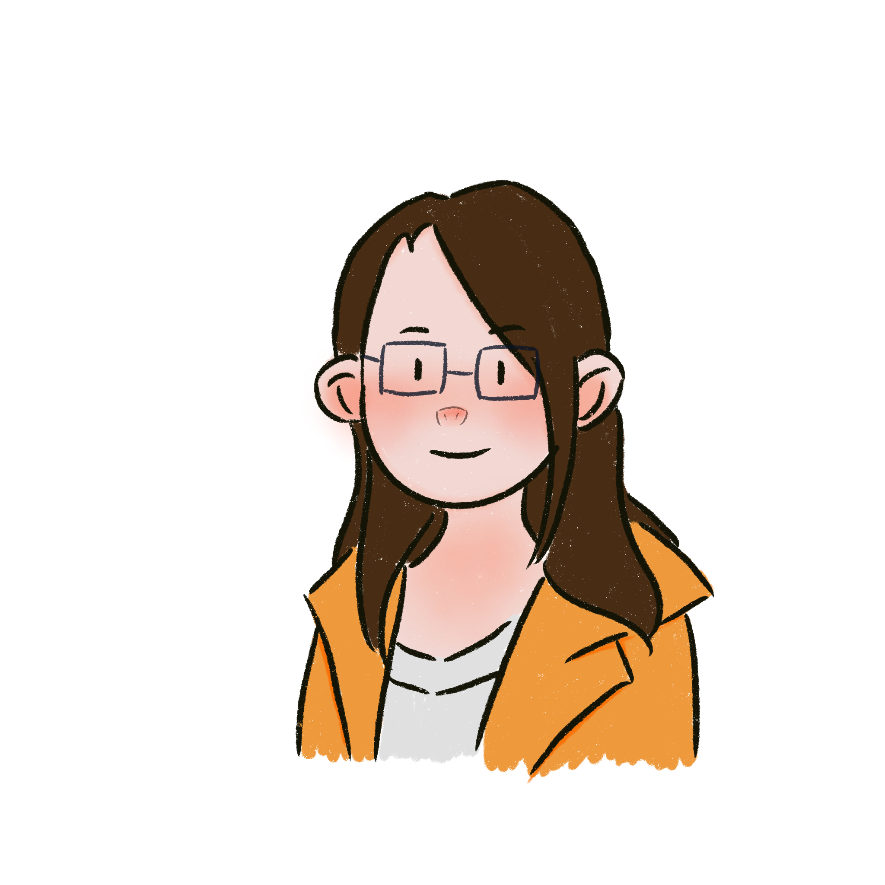
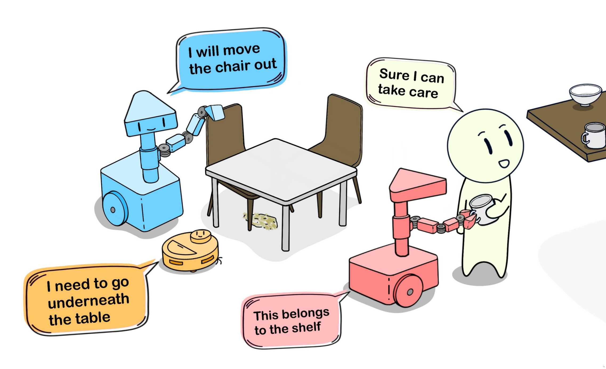
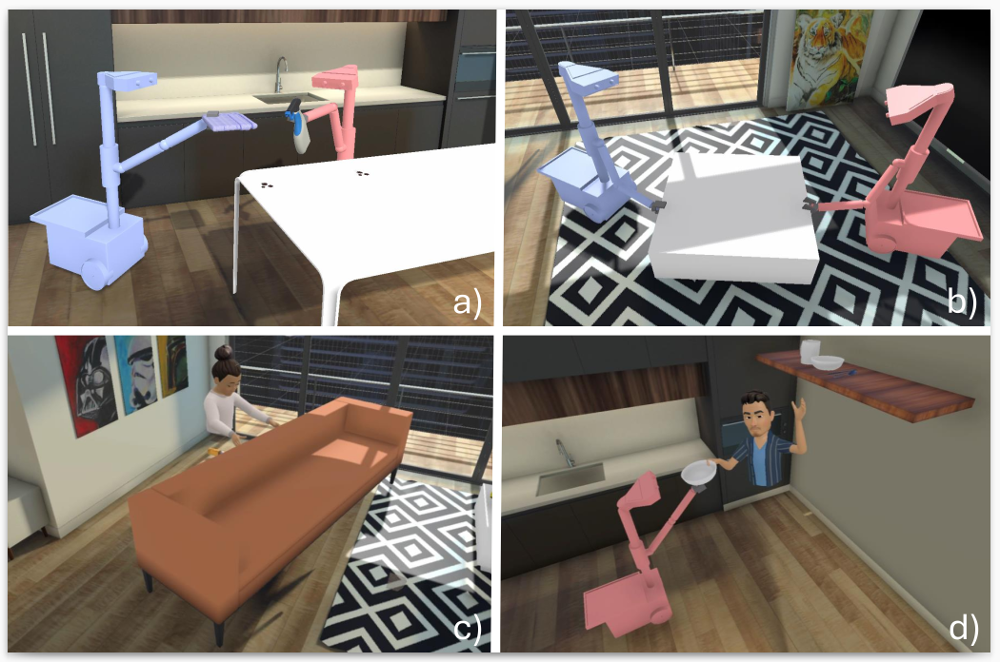
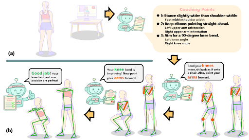
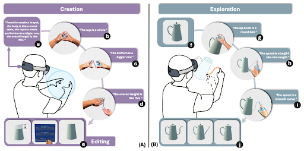

PhD Student at Purdue University
I am a PhD student in the College of Engineering at Purdue University working on human-centered robotics and interactive AI systems. My research explores how large language models can be integrated with robotic perception and control to enable natural and intuitive human–robot collaboration.
I am particularly interested in human–multi-robot interaction, multimodal interfaces, and AI-assisted skill learning.
Before joining Purdue, I received my MS in Robotics and Control from Northwestern University and my BS in Energy and Power Engineering from Xi’an Jiaotong University.

Human–Robot Interaction (HRI), Human–Multi-Robot Interaction, Large Language Models for Robotics, Multimodal Human–AI Interaction, AI-Assisted Skill Learning, Surgical Robotics

Xinyi Wang*, Shao-Kang Hsia*, Ziyi Liu*, Chenfei Zhu, Zhengzhe Zhu, Xiyun Hu, Anastasia Kouvaras Ostrowski, Karthik Ramani
ACM CHI 2026 Extended Abstract

Ziyi Liu*, Xinyi Wang*, Shao-Kang Hsia*, Chenfei Zhu, Zhengzhe Zhu, Zhengzhe Zhu, Xiyun Hu, Anastasia Kouvaras Ostrowski, Karthik Ramani
arXiv preprint, 2026

Dizhi Ma*, Jiakun Yu*, Xinyi Wang, Xiyun Hu, Liang He, Sooyeon Jeong, Karthik Ramani
ACM CHI 2026

Runlin Duan, Yuzhao Chen, Yichen Hu, Ziyi Liu, Chenfei Zhu, Xiyun Hu, Dizhi Ma, Xinyi Wang, Karthik Ramani
ACM CHI 2026 — Honorable Mention
Xinyi Wang, Richard Voyles, Juan Wachs
ICRA@40 Extended Abstract, 2024
[PDF]Robotics Software Engineer
📧 Email: wang6185@purdue.edu
💻 GitHub: github.com/cynniewg-glitch
📍 Purdue University, West Lafayette